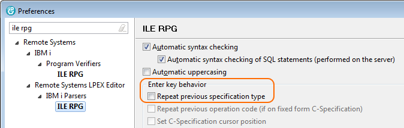
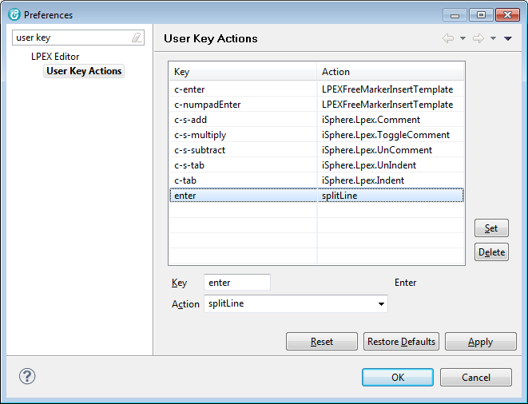

If you want to override the default action of the Enter key (enterRPG), you first have to turn-off the RPG-specific Enter key behavior for RPG/400 and/or ILE RPG.
So first disable option Repeat previous specification type for RPG/400 and/or ILE RPG depending on your needs:

Afterwards map your desired action to the Enter key on the User Key Actions preferences page of the LPEX Editor:
